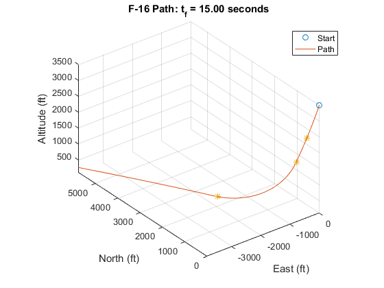
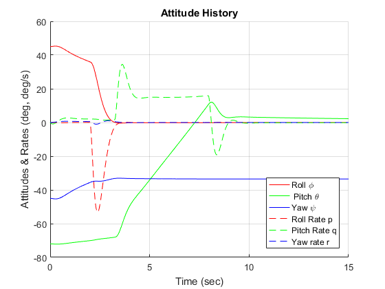
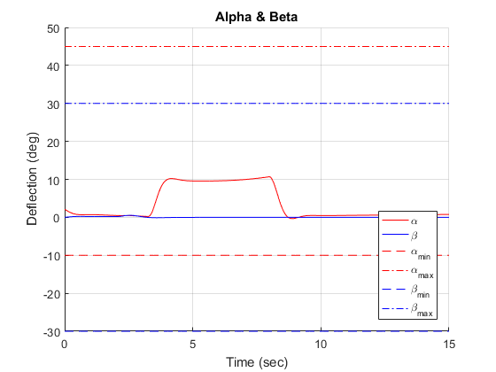
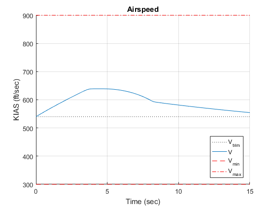
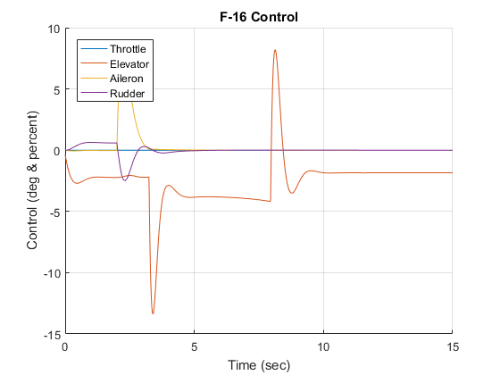
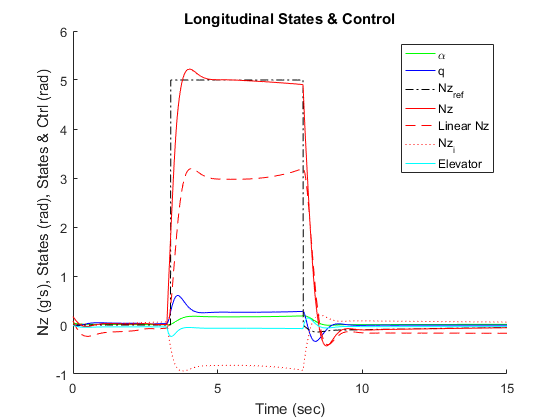
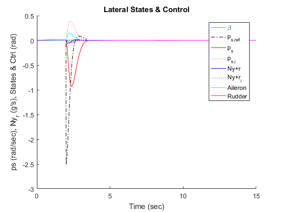

Contents
- Check flightLimits against model requirements
- Check ctrlLimits against model limits (user-proofing)
- Get Trim / Equilibrium Conditions
- Build Linear LQR Controller from Workspace Data
- Simulate Using ODE Solver
- Back-calculate & format needed intermediate states
- Save Results to Struct
- Numeric Data Analysis
- Calculate Pass/Fail Conditions
- Print Values to Console
- Create Plots
function [ simOut, passFail ] = RunF16Sim(initialState, t_vec, ... orient,F16_model,flightLimits,ctrlLimits,autopilot, analysisOn, ... printOn, plotOn)
%Simulates and analyzes autonomous F-16 maneuvers using ode45 % % Function Calls: % [ simOut ] = NonlinSim_F16_func(initialState, t_vec, orient, ... % plantModel, printOn, plotOn) % [ simOut, passFail ] = NonlinSim_F16_func(initialState, ... % 0:0.01:15, 4, 'morelli', true, true) % % Inputs: % initialState - initial F-16 state vector in feet, rad, etc. % [Vt alpha beta phi theta psi P Q R pn pe h pow] % t_vec - desired time vector (1xN) % orient - desired trim condition (values 1, 2, 3, or 4) % 1: Wings Level (gamma = 0) % 2: Wings Level (gamma <> 0) % 3: Constant Altitude Turn % 4: Steady Pull Up % F16_model - Optional string defining which function to use to % calculate state derivatives: {'morelli','stevens','linear'}. % Defaults to 'morelli'. % flightLimits - struct of pass fail limits % ctrlLimits - struct of control limits % analysisOn - if true, runs full analysis on sim results. If false, % only returns vector as output % printOn - if true, prints results to console % plotOn - if true, plots results in figures % % Outputs: % simOut - structure of analyzed results % % Comments: % This is a functionalized version of "NonlinSim_F16", meant to be used % for monte-carlo style simulations or analysis if needed. All of the % calculations are the same. If this function is called with no % arguments, it runs my default test case. % % The outer-loop control methods implemented are contained in the % function "getOuterLoopCtrl". If you desire to use hard-coded outer-loop % control or maneuvers, or want to change the implementation of GCAS, % that is the function which needs to be changed. % % <a href="https://github.com/pheidlauf/AeroBenchVV">AeroBenchVV</a> % Copyright: GNU General Public License 2017 % % See also: CONTROLLEDF16, GETAUTOPILOTCOMMANDS, ODE45 % If called with no arguments, run "Main.m". if(nargin==0) Main; end % Check that enough arguments are given if(nargin<7) error('Insufficient Arguments given') end % Default analysisOn to true if(~exist('analysisOn','var')) analysisOn = true; end % Default printOn to true if(~exist('printOn','var')) printOn = true; end % Default plotOn to true if(~exist('plotOn','var')) plotOn = true; end % If true, runs the profiler for streamlining & debugging profilerOn = false; % Start the clock to track processing time timerStart = tic; % Add necessary sub folder to path addpath(genpath('F16_Model'));
flightLimits =
altitudeMin: 0
altitudeMax: 10000
maneuverTime: 15
NzMax: 9
NzMin: -2
psMaxAccelDeg: 500
vMin: 300
vMax: 900
alphaMinDeg: -10
alphaMaxDeg: 45
betaMaxDeg: 30
ctrlLimits =
ThrottleMax: 1
ThrottleMin: 0
ElevatorMaxDeg: 25
ElevatorMinDeg: -25
AileronMaxDeg: 21.500000000000000
AileronMinDeg: -21.500000000000000
RudderMaxDeg: 30
RudderMinDeg: -30
MaxBankDeg: 60
NzMax: 6
NzMin: -1
autopilot =
title: 'Default Simulation'
basicSpeedControl: 1
steadyLevelFlightHold: 0
levelTurnControl: 0
simpleGCAS: 0
turnToHeading: 0
timeTriggeredControl: 0
Check flightLimits against model requirements
Limit airspeed from 300 to 900 ft/s
if(flightLimits.vMin < 300 || flightLimits.vMax > 900) error('flightLimits: Airspeed limits outside model limits (300 to 900)'); end % Limit alpha from -10 to 45 deg if(flightLimits.alphaMinDeg < -10 || flightLimits.alphaMaxDeg > 45) error('flightLimits: Alpha limits outside model limits (-10 to 45)'); end % Limit beta from -30 to 30 deg (positive only, symmetric) if(abs(flightLimits.betaMaxDeg) > 30) error('flightLimits: Beta limit outside model limits (30 deg)'); end
Check ctrlLimits against model limits (user-proofing)
Limit throttle from 0 to 1
if(ctrlLimits.ThrottleMin < 0 || ctrlLimits.ThrottleMax > 1) error('ctrlLimits: Throttle Limits (0 to 1)'); end % Limit elevator from -25 to 25 deg if(ctrlLimits.ElevatorMaxDeg > 25 || ctrlLimits.ElevatorMinDeg < -25) error('ctrlLimits: Elevator Limits (-25 deg to 25 deg)'); end % Limit aileron from -21.5 to 21.5 deg if(ctrlLimits.AileronMaxDeg > 21.5 || ctrlLimits.AileronMinDeg < -21.5) error('ctrlLimits: Aileron Limits (-21.5 deg to 21.5 deg)'); end % Limit rudder from -30 to 30 deg if(ctrlLimits.RudderMaxDeg > 30 || ctrlLimits.RudderMinDeg < -30) error('ctrlLimits: Rudder Limits (-30 deg to 30 deg)'); end
Get Trim / Equilibrium Conditions
if(printOn) disp('------------------------------------------------------------'); disp('F-16 Decoupled LQR Controller for Nz, P_s, and Ny+r tracking'); disp('------------------------------------------------------------'); end % Format initial Conditions for Simulation and append integral error states x0 = [initialState'; 0; 0; 0]; % Define Control Guess uguess = [.2 0 0 0]; % Format inputs for trimmerFun inputs = [initialState(1), initialState(12), 0, 0, 0]; if(printOn) printmat(inputs,'Operator Inputs',[],'Vt h gamma psidot thetadot') fprintf('Trim Orientation Selected: '); switch orient case 1 disp('Wings Level (gamma = 0)'); case 2 disp('Wings Level (gamme <> 0)'); case 3 disp('Constant Altitude Turn'); case 4 disp('Steady Pull Up'); otherwise error('Invalid Orientation for trimmerFun'); end printmat(initialState,'Inititial Conditions',[],... 'Vt alpha beta phi theta psi p q r pn pe alt pow'); printmat(uguess,'Control Guess',[],... 'throttle elevator aileron rudder'); end % Get Equilibrium Values [xequil,uequil] = trimmerFun(initialState, uguess, orient, inputs, false); if(printOn) disp('------------------------------------------------------------'); disp('Equilibrium / Trim Conditions'); printmat(xequil','State Equilibrium',[],... 'Vt alpha beta phi theta psi p q r pn pe alt pow'); printmat(uequil','Control Equilibrium',[],... 'throttle elevator aileron rudder'); end
------------------------------------------------------------
F-16 Decoupled LQR Controller for Nz, P_s, and Ny+r tracking
------------------------------------------------------------
Operator Inputs =
Vt h gamma psidot thetadot
540.00000 3500.00000 0 0 0
Trim Orientation Selected: Steady Pull Up
Inititial Conditions =
Vt alpha beta phi theta
540.00000 0.03703 0 0.78540 -1.25664
psi p q r pn
-0.78540 0 0 0 0
pe alt pow
0 3500.00000 9.00000
Control Guess =
throttle elevator aileron rudder
0.20000 0 0 0
------------------------------------------------------------
Equilibrium / Trim Conditions
State Equilibrium =
Vt alpha beta phi theta
540.00000 0.03441 0 0 0.03441
psi p q r pn
0 0 0 0 0
pe alt pow
0 3500.00000 10.35403
Control Equilibrium =
throttle elevator aileron rudder
0.15944 -0.77048 0 0
Build Linear LQR Controller from Workspace Data
% Get linearized ss-model (in case F16_method=='linear'); lin_f16 = getLinF16(xequil,uequil,printOn); % Load Decoupled Controllers from workspace load('lateralCtrlData.mat') load('longitudinalCtrlData.mat') % Append decoupled LQR gain matrices K_lqr = blkdiag(K_long, K_lat); if(printOn) printmat(K_lqr,'Decoupled LQR Controller Gains', ... 'elevator aileron rudder',... 'alpha q Nz_i beta p r ps_i Ny_r_i'); end
------------------------------------------------------------
Running jacobFun.m
Linearized F-16 SS Model
lin_f16 =
A =
Vt alpha beta phi theta
Vt -0.01658 10.6 -8.377e-06 -2.766e-06 -32.17
alpha -0.0002195 -0.9855 3.055e-06 -1.488e-06 -1.025e-05
beta 0 0 -0.3124 0.05954 0
phi 0 0 0 0 0
theta 0 0 0 0 0
psi 0 0 0 0 0
p 0 0 -31.6 0 0
q 6.662e-13 0.858 0 0 0
r 0 0 8.904 0 0
pn 1 -6.607e-06 0 -1.592e-06 -6.607e-06
pe 0 0 540 -18.58 0
alt -6.579e-16 -540 0 4.64e-06 540
pow 0 0 0 0 0
psi p q r pn
Vt 0 0 -0.4842 0 0
alpha 0 0 0.9146 0 0
beta 0 0.03387 0 -0.9925 0
phi 0 1 0 0.03443 0
theta 0 0 1 0 0
psi 0 0 0 1.001 0
p 0 -3.574 0.0002627 0.6331 0
q 0 -8.795e-06 -1.045 -0.002858 0
r 0 -0.02249 0.002539 -0.4621 0
pn 0 0 0 0 0
pe 540 0 0 0 0
alt 0 0 0 0 0
pow 0 0 0 0 0
pe alt pow
Vt 0 3.81e-05 0.3717
alpha 0 1.774e-06 -2.37e-05
beta 0 0 0
phi 0 0 0
theta 0 0 0
psi 0 0 0
p 0 0 0
q 0 -5.338e-15 0
r 0 0 0
pn 0 0 0
pe 0 0 0
alt 0 0 0
pow 0 0 -1
B =
Throttle Elevator Aileron Rudder
Vt 0 0.1848 0 0
alpha 0 -0.002085 0 0
beta 0 0 0.0002863 0.0007816
phi 0 0 0 0
theta 0 0 0 0
psi 0 0 0 0
p 0 0 -0.765 0.1376
q 0 -0.1833 0 0
r 0 0 -0.03332 -0.06472
pn 0 0 0 0
pe 0 0 0 0
alt 0 0 0 0
pow 64.94 0 0 0
C =
Vt alpha beta phi theta
Az 0.003698 16.9 -5.296e-08 0 0
q 0 0 0 0 0
alpha 0 1 0 0 0
theta 0 0 0 0 1
Vt 1 0 0 0 0
Ay 0 0 -5.24 0 0
p 0 0 0 0 0
r 0 0 0 0 0
beta 0 0 1 0 0
phi 0 0 0 1 0
psi p q r pn
Az 0 -4.1e-08 0.9454 -0.001336 0
q 0 0 1 0 0
alpha 0 0 0 0 0
theta 0 0 0 0 0
Vt 0 0 0 0 0
Ay 0 -0.008953 0 0.1154 0
p 0 1 0 0 0
r 0 0 0 1 0
beta 0 0 0 0 0
phi 0 0 0 0 0
pe alt pow
Az 0 -2.979e-05 0
q 0 0 0
alpha 0 0 0
theta 0 0 0
Vt 0 0 0
Ay 0 0 0
p 0 0 0
r 0 0 0
beta 0 0 0
phi 0 0 0
D =
Throttle Elevator Aileron Rudder
Az 0 -0.05062 0 0
q 0 0 0 0
alpha 0 0 0 0
theta 0 0 0 0
Vt 0 0 0 0
Ay 0 0 0.004801 0.01311
p 0 0 0 0
r 0 0 0 0
beta 0 0 0 0
phi 0 0 0 0
Name: Linearized F-16 SS Model
Continuous-time state-space model.
Decoupled LQR Controller Gains =
alpha q Nz_i beta p
elevator -156.88015 -31.03701 -38.72983 0 0
aileron 0 0 0 38.02751 -5.65497
rudder 0 0 0 17.56400 1.58391
r ps_i Ny_r_i
elevator 0 0 0
aileron -14.08804 -34.06416 -9.95406
rudder -41.43509 6.29550 -53.86016
Simulate Using ODE Solver
if(printOn) disp('------------------------------------------------------------'); disp('Running Nonlinear Simulation in ODE45'); end % USER EDIT: Set ode options if desired options = []; % Call ode45 to simulate controlled nonlinear system [time,x_f16_hist] = ode45(@(t,y) controlledF16(t,y,xequil, uequil,... K_lqr, F16_model, lin_f16, flightLimits,ctrlLimits,autopilot),... t_vec, x0, options); % Record time to complete simulation t_simmed = toc(timerStart); if(printOn) fprintf('\n'); disp('Simulation Complete'); disp('Time to simulate (MM:SS.ms):'); fprintf('%s\n',datestr((t_simmed)/(24*60*60),'MM:SS.FFF')) fprintf('\n'); disp('Begin back-calculation of controls'); end
------------------------------------------------------------ Running Nonlinear Simulation in ODE45 Simulation Complete Time to simulate (MM:SS.ms): 00:00.731 Begin back-calculation of controls
Back-calculate & format needed intermediate states
Format Output for easier indexing
x_f16_hist = x_f16_hist'; if(~analysisOn) simOut = x_f16_hist; passFail = 'NO ANALYSIS COMPLETED'; warning('No analysis completed'); return end % Initialize "history" vectors u_hist = zeros(7,length(time)); % Control Nz_hist = zeros(1,length(time)); % Nz (full nonlinear calculation) ps_hist = zeros(1,length(time)); % ps (full nonlinear calculation) Ny_r_hist = zeros(1,length(time)); % Ny_r lin_Nz_hist = zeros(1,length(time)); % Nz (linear approximation) lin_Ny_r_hist = zeros(1,length(time)); % Ny (linear approximation) % Recall GCAS time steps from persistent memory of getAutopilotCommands % [~,t_maneuver] = getAutopilotCommands(time(end), x0, xequil, uequil,... % ctrlLimits, false); [~,t_maneuver] = getAutopilotCommands(time(end), x0, xequil, uequil, ... flightLimits, ctrlLimits, autopilot, false); % Reset Persistent Variables in getOuterLoopControl % getAutopilotCommands(0, x0, xequil, uequil, ctrlLimits, true); getAutopilotCommands(0, x0, xequil, uequil, ... flightLimits, ctrlLimits, autopilot, true); %{ Note: Several important intermediate values are not outputted from ode45 automatically. Below, I use the outputted states and time vector to recalculate the values and store them for data analysis and visualization. Because ode45 integrates with an non-fixed time-step, the recalled & recalculated results may be slightly different. This primarily effects the ps_ref and Nz_ref history. %} % Back calculate controlled states for each time step for i = 1:length(time) [~,u,Nz,ps,Ny_r] = controlledF16(time(i),x_f16_hist(:,i),... xequil, uequil, K_lqr, F16_model, lin_f16,... flightLimits, ctrlLimits, autopilot); Nz_hist(i) = Nz; ps_hist(i) = ps; Ny_r_hist(i) = Ny_r; u_hist(:,i) = u; % Linear approx of Nz lin_Nz_hist(i) = (lin_f16.c(1,:)*(x_f16_hist(1:13,i) - xequil)+ ... lin_f16.d(1,:)*(u(1:4) + uequil)); % lin_Nz_hist(i) = (lin_f16.c(1,:)*(x_f16_hist(1:13,i)) + ... % lin_f16.d(1,:)*(u(1:4))); % Linear approx of (Ny + r) lin_Ny_r_hist(i) = (lin_f16.c(6,:)*(x_f16_hist(1:13,i)-xequil)+... lin_f16.d(6,:)*(u(1:4) + uequil)) + x_f16_hist(9,i); end % Determine ps acceleration (rad/s/s) ps_accels = zeros(1,length(ps_hist)); ps_accels(1) = 1; for i = 2:length(ps_hist) ps_accels(i) = (ps_hist(i) - ps_hist(i-1))/(time(i) - time(i-1)); end if(printOn) % Record processing time t_calced = toc(timerStart); disp('Back-Calculation of Controls Complete'); disp('Time to calculate (MM:SS.ms):'); fprintf('%s\n',datestr((t_calced-t_simmed)/(24*60*60),... 'MM:SS.FFF')) fprintf('\n'); disp('Begin struct generation & pass/fail analysis'); end
Back-Calculation of Controls Complete Time to calculate (MM:SS.ms): 00:10.432 Begin struct generation & pass/fail analysis
Save Results to Struct
Create struct for state and error history
stateHistory = struct([]); % F-16 Nonlinear Model States stateHistory(1).time = t_vec; stateHistory.VT = x_f16_hist(1,:); stateHistory.alpha = x_f16_hist(2,:); stateHistory.beta = x_f16_hist(3,:); stateHistory.phi = x_f16_hist(4,:); stateHistory.theta = x_f16_hist(5,:); stateHistory.psi = x_f16_hist(6,:); stateHistory.P = x_f16_hist(7,:); stateHistory.Q = x_f16_hist(8,:); stateHistory.R = x_f16_hist(9,:); stateHistory.pn = x_f16_hist(10,:); stateHistory.pe = x_f16_hist(11,:); stateHistory.h = x_f16_hist(12,:); stateHistory.pow = x_f16_hist(13,:); stateHistory.x_f16_hist = x_f16_hist; % Integral Error States stateHistory.Nz_e_i = x_f16_hist(14,:); stateHistory.ps_e_i = x_f16_hist(15,:); stateHistory.Ny_r_e_i = x_f16_hist(16,:); % Calculated outputs & controlled states stateHistory.Nz_hist = Nz_hist; stateHistory.ps_hist = ps_hist; stateHistory.Ny_r_hist = Ny_r_hist; stateHistory.lin_Nz_hist = lin_Nz_hist; stateHistory.lin_Ny_hist = lin_Ny_r_hist; % Create struct for back-calculated control history controlHistory = struct([]); controlHistory(1).throttle = u_hist(1,:); controlHistory.elevator = u_hist(2,:); controlHistory.aileron = u_hist(3,:); controlHistory.rudder = u_hist(4,:); controlHistory.Nz_ref = u_hist(5,:); controlHistory.ps_ref = u_hist(6,:); controlHistory.Ny_r_ref = u_hist(7,:); % Create output struct to store results. simOut = struct('states',stateHistory,'ctrls',controlHistory);
Numeric Data Analysis
Calculate Desired Performance Specs
minAltitude = min(x_f16_hist(12,:)); % ft altitudeLost = x_f16_hist(12,1) - minAltitude; % ft maxAirspeed = max(x_f16_hist(1,:)); % ft/s minAirspeed = min(x_f16_hist(1,:)); % ft/s maxNz = max(Nz_hist); % g's (0==level flight) minNz = min(Nz_hist); % g's maxSideForce = max(abs(Ny_r_hist)); % g's max_ps_accel = max(abs(ps_accels)); % rad/s/s % Add analysis results to output struct. simOut.ps_accels = ps_accels; simOut.t_maneuver = t_maneuver; simOut.x0 = x0; simOut.trimState = xequil; simOut.trimCtrl = uequil; simOut.lin_ss_model = lin_f16; simOut.plantModel = F16_model; simOut.flightLimits = flightLimits; simOut.controlLimits = ctrlLimits;
Calculate Pass/Fail Conditions
% Initialize output struct passFail = struct([]); passFail(1).stable = true; % Check airspeed limits if(maxAirspeed > flightLimits.vMax || minAirspeed < flightLimits.vMin) passFail.airspeed = false; passFail.stable = false; else passFail.airspeed = true; end % Check alpha limits if(max(x_f16_hist(2,:)) > deg2rad(flightLimits.alphaMaxDeg) || ... min(x_f16_hist(2,:)) < deg2rad(flightLimits.alphaMinDeg)) passFail.alpha = false; passFail.stable = false; else passFail.alpha = true; end % Check beta limits if(abs(x_f16_hist(3,:)) > deg2rad(flightLimits.betaMaxDeg)) passFail.beta = false; passFail.stable = false; else passFail.beta = true; end % Check Nz limits if(minNz < flightLimits.NzMin || maxNz > flightLimits.NzMax) passFail.Nz = false; else passFail.Nz = true; end % Check Ps_rate limits if(max_ps_accel > flightLimits.psMaxAccelDeg) passFail.psMaxAccelDeg = false; else passFail.psMaxAccelDeg = true; end % Check altitude limits if(min(x_f16_hist(12,:)) < flightLimits.altitudeMin ||... max(x_f16_hist(12,:)) > flightLimits.altitudeMax) passFail.altitude = false; else passFail.altitude = true; end % Check maneuver time limits (GCAS?) if(t_maneuver(2)-t_maneuver(1) > flightLimits.maneuverTime ||... t_maneuver(2) < 0) passFail.maneuverTime = false; else passFail.maneuverTime = true; end % Add passFail to the main output too just in case simOut.passFail = passFail; if(printOn) % Record processing time t_analysis = toc(timerStart); disp('Pass/Fail Analysis Complete'); disp('Time to calculate (MM:SS.ms):'); fprintf('%s\n',datestr((t_analysis - t_calced)/(24*60*60),... 'MM:SS.FFF')) fprintf('\n'); end
Pass/Fail Analysis Complete Time to calculate (MM:SS.ms): 00:00.063
Print Values to Console
if(printOn) disp('----------------------------------------------------------'); disp('RESULTS:'); disp(' Min & Max Values:'); fprintf('Min Altitude: %9.3f ft \n', minAltitude); fprintf('Altitude Lost: %9.3f ft \n', altitudeLost); fprintf('Min Airspeed: %9.3f ft/sec \n', minAirspeed); fprintf('Max Airspeed: %9.3f ft/sec \n', maxAirspeed); fprintf('Max Down Force: %9.3f g''s \n', maxNz); fprintf('Min Down Force: %9.3f g''s \n', minNz); fprintf('Max Side Force: %9.3f g''s \n', maxSideForce); fprintf('Max Roll Accel: %9.3f deg/sec^2 \n', ... rad2deg(max_ps_accel)); fprintf('\n'); disp(' Maneuver Event Times:'); fprintf('Maneuver Start: %9.3f sec \n', t_maneuver(1)); if(length(t_maneuver)>2) for(i = 3:(length(t_maneuver))) fprintf('Checkpoint %2d: %9.3f sec \n',... i-2,t_maneuver(i)); end end fprintf('Maneuver Complete: %9.3f sec \n', t_maneuver(2)); fprintf('Final Time: %9.3f sec \n', time(end)); disp('(if Checkpoint 2 < Checkpoint 1, it is due to ODE45'); disp('stepping backwards in time)'); fprintf('\n'); disp(' F-16 Attitude at Start:'); fprintf('Roll (phi): %9.3f deg \n', ... rad2deg(x_f16_hist(4,1))); fprintf('Pitch (theta): %9.3f deg \n', ... rad2deg(x_f16_hist(5,1))); fprintf('Yaw (psi): %9.3f deg \n', ... rad2deg(x_f16_hist(6,1))); fprintf('\n'); disp(' F-16 Attitude at End:'); fprintf('Roll (phi): %9.3f deg \n', ... rad2deg(x_f16_hist(4,end))); fprintf('Pitch (theta): %9.3f deg \n', ... rad2deg(x_f16_hist(5,end))); fprintf('Yaw (psi): %9.3f deg \n', ... rad2deg(x_f16_hist(6,end))); fprintf('\n'); disp(' Pass Fail Conditions:'); disp(passFail); disp('----------------------------------------------------------'); end
----------------------------------------------------------
RESULTS:
Min & Max Values:
Min Altitude: 96.178 ft
Altitude Lost: 3403.822 ft
Min Airspeed: 540.000 ft/sec
Max Airspeed: 639.104 ft/sec
Max Down Force: 5.222 g's
Min Down Force: -0.426 g's
Max Side Force: 0.061 g's
Max Roll Accel: 233.522 deg/sec^2
Maneuver Event Times:
Maneuver Start: 2.000 sec
Checkpoint 1: 3.395 sec
Maneuver Complete: 8.000 sec
Final Time: 15.000 sec
(if Checkpoint 2 < Checkpoint 1, it is due to ODE45
stepping backwards in time)
F-16 Attitude at Start:
Roll (phi): 45.000 deg
Pitch (theta): -72.000 deg
Yaw (psi): -45.000 deg
F-16 Attitude at End:
Roll (phi): -0.000 deg
Pitch (theta): 2.249 deg
Yaw (psi): -33.514 deg
Pass Fail Conditions:
stable: 1
airspeed: 1
alpha: 1
beta: 1
Nz: 1
psMaxAccelDeg: 1
altitude: 1
maneuverTime: 1
----------------------------------------------------------
Create Plots
if(plotOn) if(printOn) disp('Begin plotting'); end % ENU Path figure(10); hold on; grid on; fig1titlestr = sprintf('F-16 Path: t_f = %4.2f seconds',time(end)); title(fig1titlestr); xlabel('East (ft)'); ylabel('North (ft)'); zlabel('Altitude (ft)'); hold on; scatter3(x_f16_hist(11,1),x_f16_hist(10,1),x_f16_hist(12,1)); plot3(x_f16_hist(11,:),x_f16_hist(10,:),x_f16_hist(12,:)); legend('Start','Path') % Get indices of maneuver times in result time steps time_maneuver = zeros(size(t_maneuver)); for (i=1:length(t_maneuver)) if(t_maneuver(i) >= 0) time_maneuver(i) = find(time<=t_maneuver(i),1,'last'); else time_maneuver(i) = 1; % warning('Maneuver Not Completed'); end end scatter3(x_f16_hist(11,time_maneuver),... x_f16_hist(10,time_maneuver),... x_f16_hist(12,time_maneuver),'*'); axis image view(3) % Attitude figure(2); hold on; grid on; title('Attitude History'); xlabel('Time (sec)'); ylabel('Attitudes & Rates (deg, deg/s)'); hold on; plot(time, rad2deg(x_f16_hist(4,:)),'r'); % phi (deg) plot(time, rad2deg(x_f16_hist(5,:)),'g'); % theta (deg) plot(time, rad2deg(x_f16_hist(6,:)),'b'); % psi (deg) plot(time, rad2deg(x_f16_hist(7,:)),'r--'); % p (deg/s) plot(time, rad2deg(x_f16_hist(8,:)),'g--'); % q (deg/s) plot(time, rad2deg(x_f16_hist(9,:)),'b--'); % r (deg/s) legend('Roll \phi',' Pitch \theta','Yaw \psi',... 'Roll Rate p','Pitch Rate q','Yaw rate r',... 'location','SouthEast') % Alpha and Beta figure(3); hold on; grid on; title('Alpha & Beta'); xlabel('Time (sec)'); ylabel('Deflection (deg)'); hold on; plot(time, rad2deg(x_f16_hist(2,:)),'r-'); % alpha (deg) plot(time, rad2deg(x_f16_hist(3,:)),'b-'); % beta (deg) plot(time, ones(size(time))*(-10),'r--'); % alpha min (deg) plot(time, ones(size(time))*45,'r-.'); % alpha max (deg) plot(time, ones(size(time))*(-30),'b--'); % beta min (deg) plot(time, ones(size(time))*30,'b-.'); % beta max (deg) legend('\alpha','\beta','\alpha_{min}','\alpha_{max}',... '\beta_{min}','\beta_{max}',... 'location','SouthEast') % Vt figure(4); grid on; title('Airspeed'); xlabel('Time (sec)'); ylabel('KIAS (ft/sec)'); hold on; plot(time, ones(size(time))*xequil(1),'k:'); plot(time,x_f16_hist(1,:)); plot(time, ones(size(time))*300,'r--'); plot(time, ones(size(time))*900,'r-.'); legend('V_{trim}','V','V_{min}','V_{max}','location','SouthEast') % All Control Signals figure(5); hold on; grid on; title('F-16 Control'); xlabel('Time (sec)'); ylabel('Control (deg & percent)'); hold on; plot(time,u_hist(1,:)); plot(time,rad2deg(u_hist(2,:))); plot(time,rad2deg(u_hist(3,:))); plot(time,rad2deg(u_hist(4,:))); legend('Throttle','Elevator','Aileron','Rudder','location',... 'NorthWest') % Longitudinal States & Control figure(7) hold on; title('Longitudinal States & Control'); xlabel('Time (sec)'); ylabel('Nz (g''s), States (rad), States & Ctrl (rad)'); % State Order: alpha, q, Nz plot(time, (x_f16_hist(2,:)),'g'); % Alpha (rad) plot(time, (x_f16_hist(8,:)),'b'); % q (rad/s) plot(time, u_hist(5,:),'k-.'); % Nz_r plot(time, Nz_hist,'r-'); % Nz (g's) plot(time, lin_Nz_hist,'r--'); % Linear Nz (g's) plot(time, x_f16_hist(14,:),'r:'); % Nz_i plot(time, (u_hist(2,:)),'c'); % Elevator (rad) legend('\alpha','q','Nz_{ref}','Nz','Linear Nz','Nz_i','Elevator'); % Lateral States & Control figure(8) hold on; title('Lateral States & Control'); xlabel('Time (sec)'); ylabel('ps (rad/sec), Ny_r (g''s), States & Ctrl (rad)'); % State Order: beta p r ps_i Ny_r_i plot(time, (x_f16_hist(3,:)),'g'); % Beta (rad) plot(time, u_hist(6,:),'k-.'); % ps_ref plot(time, ps_hist,'r'); % ps plot(time, x_f16_hist(15,:),'r:'); % ps_i plot(time, Ny_r_hist,'b-'); % Ny_r (g's) % plot(time, lin_Ny_r_hist,'r--'); % Linear Nz_r (g's) plot(time, x_f16_hist(16,:),'b:'); % Ny_r_i plot(time, (u_hist(3,:)),'c'); % Aileron (rad) plot(time, (u_hist(4,:)),'m'); % Rudder (rad) legend('\beta','p_{s,ref}','p_s','p_{s,i}',... 'Ny+r','Ny+r_i','Aileron','Rudder'); if(printOn) % Record processing time t_plotted = toc(timerStart); disp('Plot Generation Complete'); disp('Time to calculate (MM:SS.ms):'); fprintf('%s\n',datestr((t_plotted-t_analysis)/(24*60*60),... 'MM:SS.FFF')) fprintf('\n'); end end if(profilerOn) profile viewer; profile off; end
Begin plotting Plot Generation Complete Time to calculate (MM:SS.ms): 00:01.971      
Error using RunF16Sim (line 57) Insufficient Arguments given
end